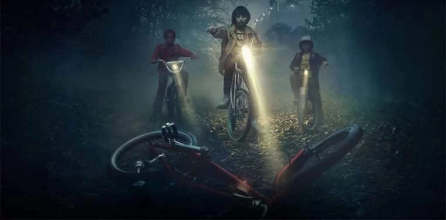
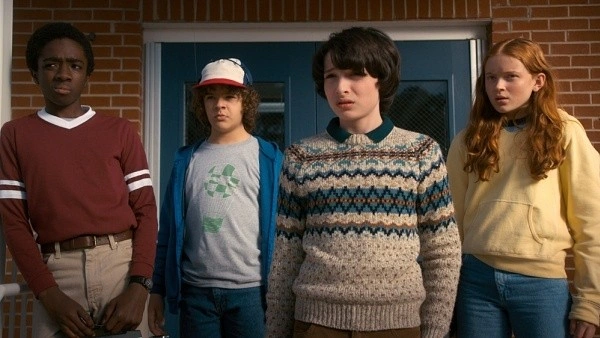
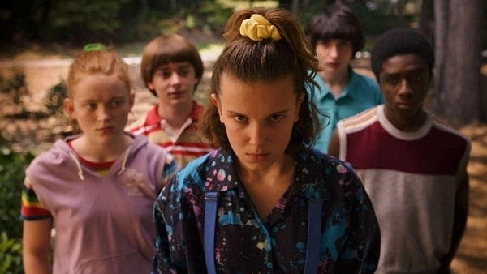
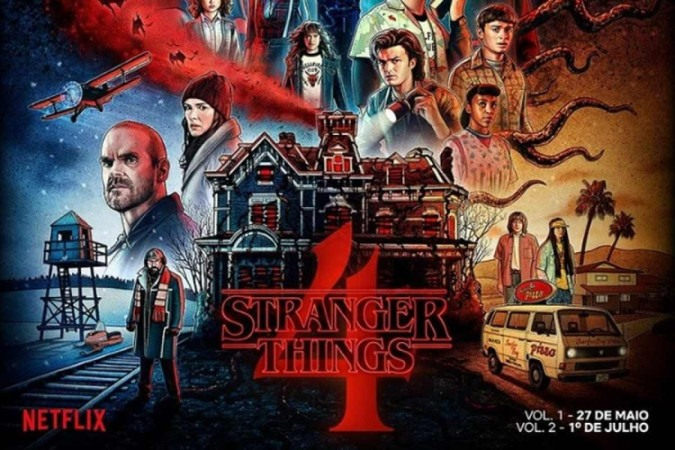

O QUE É
Stranger Things, nova série da Netflix, proporciona exatamente essa sensação: a de voltar a ser criança e ter aquele medo irracional de algo que não sabemos exatamente o que é. Trazendo de volta o espírito oitentista, o programa consegue apresentar uma trama interessantíssima envolta em uma atmosfera nostálgica.
Resumindo esta, teríamos um menino desaparece em circunstâncias misteriosas numa pequena cidade dos EUA e a polícia local, sua família e seus amigos saem em sua busca. No meio de tudo isso, um grande mistério envolvendo experimentos bizarros se desenrola e aflige os moradores do local. É um argumento básico, quase clichê, mas a forma que os irmãos Matt e Ross Duffer conduzem a narrativa a torna extremamente autêntica e original.
É também interessante notar a constante presença de referências à cultura pop dos anos 80, mas estas não se tornam uma muleta para diálogos ou piadas, sempre se encaixando no contexto maior da história proposta. Aqueles mais entusiastas terão de assistir aos episódios mais de uma vez para conseguirem captar todos os easter eggs presentes. A amplitude das referências é grande: de Dungeons & Dragons a Senhor dos Anéis passando por Star Wars e Star Trek. Os irmãos Duffer também conseguem inserir referências não-declaradas na série de forma magistral, fazendo pequenas homenagens visuais aos filmes de Steven Spielberg, Sam Raimi e John Carpenter.
Além da trama e da ambientação, Stranger Things possui atuações de peso. Winona Ryder (Os Fantasmas se Divertem) é o maior nome do elenco, mas acaba ficando em segundo plano por boa parte da história. David Harbour (The Newsroom), que interpreta o xerife local, consegue mesclar muito bem a comédia e o drama de seu personagem, construindo um herói que busca redenção em meio a uma situação limite.
É no núcleo infantil e adolescente, porém, que Stranger Things se destaca. É possível dizer que as crianças da série possuem o mesmo carisma e a mesma química dOs Goonies de Richard Donner. Já os adolescentes conseguem carregar todo o clima dos filmes de John Hughes ou da série cult Freaks & Geeks em tramas paralelas que se mostram tão interessantes quanto a principal.
Ao contrário de muitos produtos do mercado de entretenimento contemporâneo, Stranger Things usa a nostalgia em prol de sua história e entrega ao público uma história divertida, aterrorizante e profundamente pessoal, que pode ser capaz de trazer de volta aos adultos do mundo todo, aquele medo sem sentido do monstro debaixo da cama ou dentro do armário, usando isso para que pensemos nos monstros que temos dentro de nós mesmos. (JovemNerd 2024)
Primeira temporada (2016)

A primeira temporada de Stranger Things se passa em 1983, na pacata cidade de Hawkins, Indiana. Tudo começa quando um garoto chamado Will Byers desaparece misteriosamente após um encontro com uma criatura sinistra enquanto voltava para casa de bicicleta. Enquanto sua mãe, Joyce, e seu irmão, Jonathan, tentam desesperadamente encontrá-lo, seus amigos, Mike, Dustin e Lucas, decidem investigar por conta própria.
Enquanto isso, uma jovem com habilidades telecinéticas e sem memória de seu passado é encontrada pela polícia e acaba se juntando ao grupo de amigos de Mike, que a chama de Eleven, devido à tatuagem "011" em seu puls o. Eleven revela que escapou de um laboratório sinistro, onde experimentos eram realizados sobre ela e onde uma criatura aterrorizante, conhecida como Demogorgon, foi acidentalmente liberada.
to Mike e seus amigos tentam entender o que está acontecendo e encontrar Will, eles enfrentam perigos sobrenaturais, incluindo o Demogorgon e agentes do laboratório, liderados pelo Dr. Martin Bre nner. Joyce, desesperada para se comunicar com Will, começa a receber mensagens misteriosas através das l uzes de Natal, acreditando ser seu filho tentando se comunicar.
Eventualmente, o grupo de amigos se une para resgatar Will do Mundo Invertido, uma dimensão paralela habitada pela criatura. Com a ajuda de Eleven e de seus próprios recursos, eles conseguem derrotar o Demogorgon e resgatar Will, embora Eleven aparentemente sacrifique sua vida no processo.
A temporada termina com um epílogo que revela que Eleven está viva e vivendo sob os cuidados do xerife Jim Hopper, que a mantém escondida do mundo exterior. Will parece estar se recuperando, mas tem visões perturbadoras do Mundo Invertido, sugerindo que os eventos sobrenaturais em Hawkins estão longe de terminar. (OpenAi,2024)
Episódios da Temporada
| Titulo original | Titulo Traduzido | Tempo de Episódio |
|---|---|---|
| "Chapter One: The Vanishing of Will Byers" | "Capítulo Um: O Desaparecimento de Will Byers " | 48:17 |
| "Chapter Two: The Weirdo on Maple Street" | "Capítulo Dois: A Esquisitona na Rua Maple " | 55:08 |
| "Chapter Three: Holly, Jolly" | "Capítulo Três: Caramba " | 51:37 |
| "Chapter Four: The Body" | "Capítulo Quatro: O Corpo " | 50:13 |
| "Chapter Five: The Flea and the Acrobat" | "Capítulo Cinco: A Pulga e o Acrobata " | 52:43 |
| "Chapter Six: The Monster" | "Capítulo Seis: O Monstro " | 41:46 |
| "Chapter Seven: The Bathtub" | "Capítulo Sete: A Banheira " | 50:24 |
| "Chapter Eight: The Upside Down" | "Capítulo Oito: O Mundo Invertido " | 58:37 |
Garotos em frente a um fliperama
Meninos assutados vendo algo
Myke e Eleven em cima de uma bicicleta olhando algo
Myke falando em seu walk talkie
Segunda temporada (2017)
Na segunda temporada de Stranger Things, a cidade de Hawkins continua a lidar com as consequências dos eventos sobrenaturais da temporada anterior. Will Byers, que foi resgatado do Mundo Invertido, começa a ter visões assustadoras e a mostrar sinais de estar ligado ao outro mundo. Enquanto isso, Eleven está escondida com Hopper, tentando descobrir mais sobre seu passado e suas habilidades.
Novos personagens são introduzidos, incluindo Max e seu irmão violento, Billy. Um novo vilão, o "Demogorgon Shadow" ou "Mind Flayer", surge como uma ameaça ainda maior do que o Demogorgon da temporada anterior. Will é possuído pela criatura e começa a agir como um espião para ela.
Enquanto isso, Nancy e Jonathan investigam a empresa corrupta, a Hawkins Lab, enquanto Steve e Dustin formam uma improvável parceria para lidar com um Dart, uma criatura parecida com um Demogorgon. No clímax da temporada, Eleven retorna e se junta aos amigos para enfrentar o Mind Flayer e fechar o portal para o Mundo Invertido, salvando Hawkins mais uma vez. (OpenAi,2024)
Episódios da Temporada
| Titulo original | Titulo Traduzido | Tempo de Episódio |
|---|---|---|
| "Chapter One: MADMAX" | "Capítulo Um: Madmax " | 48:00 |
| "Chapter Two: Trick or Treat, Freak" | "Capítulo Dois: Gostosuras ou Travessuras, Aberração " | 56:00 |
| "Chapter Three: The Pollywog" | "Capítulo Três: O Girino " | 51:00 |
| "Chapter Four: Will the Wise" | "Capítulo Quatro: Will, o Sábio " | 46:00 |
| "Chapter Five: Dig Dug" | "Capítulo Cinco: Dig Dug" | 58:00 |
| "Chapter Six: The Spy" | "Capítulo Seis: O Espião " | 52:00 |
| "Chapter Seven: The Lost Sister" | "Capítulo Sete: A Irmã Perdida " | 46:00 |
| "Chapter Eight: The Mind Flayer" | "Capítulo Oito: O Devorador de Mentes " | 48:00 |
| "Chapter Nine: The Gate" | "Capítulo Nove: O Portal " | 01:02:0 |
Garotos em frente a um fliperama
Meninos assutados vendo algo
Myke e Eleven em cima de uma bicicleta olhando algo
Myke falando em seu walk talkie
Terceira Temporada (2019)
Na terceira temporada, ambientada no verão de 1985, a cidade de Hawkins enfrenta uma nova ameaça quando um shopping center recém-inaugurado, o Starcourt Mall, se torna o centro das operações de uma conspiração russa para reabrir o portal para o Mundo Invertido.
Enquanto isso, os relacionamentos entre os personagens continuam a se desenvolver, com o grupo de amigos enfrentando desafios pessoais e românticos. Steve trabalha no shopping center com sua colega de trabalho Robin, enquanto Nancy e Jonathan lutam para serem levados a sério como repórteres. Max e Eleven desenvolvem uma forte amizade, enquanto Mike e Eleven enfrentam problemas de relacionamento.
Enquanto os adultos em Hawkins são distraídos pelos russos e pelas mudanças na cidade, os amigos descobrem a verdade por trás dos eventos estranhos que estão acontecendo e se unem para mais uma vez salvar a cidade do perigo iminente. No final, o portal para o Mundo Invertido é fechado, mas Hopper aparentemente morre ao fazê-lo. (OpenAi,2024)
Episódios da Temporada
| Titulo original | Titulo Traduzido | Tempo de Episódio |
|---|---|---|
| "Chapter One: Suzie, Do You Copy?" | "Capítulo um: Está me ouvindo, Suzie?" | 48:00 |
| "Chapter Two: The Mall Rats" | "Capítulo dois: O caso dos ratos" | 56:00 |
| "Chapter Three: The Case of the Missing Lifeguardg" | "Capítulo três: A salva-vidas desaparecida " | 51:00 |
| "Chapter Four: The Sauna Test" | "Capítulo quatro: A prova da sauna " | 46:00 |
| "Chapter Five: The Flayed" | "Capítulo cinco: Os devorados" | 58:00 |
| "Chapter Six: E Pluribus Unum" | "Capítulo seis: E pluribus unum " | 52:00 |
| "Chapter Seven: The Bite" | "Capítulo sete: A mordida " | 46:00 |
| "Chapter Eight: The Battle of Starcourt" | "Capítulo oito: A batalha de Starcourt" | 48:00 |
Quarta temporada (2022)
A quarta temporada de Stranger Things continua a explorar os mistérios e perigos que assolam a cidade de Hawkins. Com Hopper aparentemente morto, Joyce e seus filhos, junto com seus amigos, tentam seguir em frente, mas logo descobrem que o perigo ainda não acabou.
Novos personagens são introduzidos, incluindo o Dr. Martin Brenner, o ex-cientista da Hawkins Lab, e outros experimentos que foram realizados lá. Enquanto isso, Eleven começa a descobrir mais sobre suas origens e sua conexão com o Laboratório.
A temporada segue múltiplas linhas de enredo, incluindo a jornada de Eleven para entender seu passado, a ameaça de uma nova criatura do Mundo Invertido e a investigação de Joyce e seus amigos sobre a verdade por trás dos experimentos do Laboratório.
À medida que a temporada avança, os personagens são testados de novas maneiras, com sacrifícios sendo feitos e segredos sendo revelados. No clímax da temporada, o grupo se une mais uma vez para enfrentar a ameaça iminente e salvar Hawkins, mas não sem custo. (OpenAi,2024)
Episódios da Temporada
| Titulo original | Titulo Traduzido | Tempo de Episódio |
|---|---|---|
| "Chapter One: The Hellfire Club" | "Capítulo um: O Clube Hellfire" | 48:00 |
| "Chapter Two: Vecna's Curse" | "Capítulo dois: A maldição de Vecna" | 56:00 |
| "Chapter Three: The Monster and The Superhero" | "Capítulo três: O monstro e a super-heroína " | 51:00 |
| "Chapter Four: Dear Billy" | "Capítulo quatro: Querido Billy " | 46:00 |
| "Chapter Five: The Nina Project" | "Capítulo cinco: Projeto Nina" | 58:00 |
| "Chapter Six: The Dive" | "Capítulo seis: Mergulho " | 52:00 |
| "Chapter Seven: The Massacre At Hawkins Lab" | "Capítulo sete: O massacre no laboratório de Hawkins " | 46:00 |
Parte dois
| "Chapter Eight: Papa" | "Capítulo oito: Papai" | 48:00 |
| "Chapter Nine: The Piggyback" | "Capítulo nove: O plano de Onze" | 48:00 |
Temporada 1
Temporada 2
Temporada 3
Temporada 4
Personagens prinipais(Atores)
Millie Bobby Brown
- Millie Bobby Brown é uma atriz britânica conhecida por seu papel como Eleven na série "Stranger Things". Nascida em 2004, em Marbella, Espanha, sua atuação na série lhe rendeu aclamação e prêmios. Além de atuar, é ativista, embaixadora da UNICEF e fundadora da marca de beleza Florence by Mills.
Finn Wolfhard
- Finn Wolfhard é um ator e músico canadense, nascido em 2002, conhecido por seu papel como Mike Wheeler na série "Stranger Things". Além de atuar, ele é vocalista e guitarrista da banda de rock californiana The Aubreys.
Noah Schnapp
- Noah Schnapp é um ator norte-americano, nascido em 2004, reconhecido por interpretar Will Byers na série "Stranger Things". Sua atuação na série lhe rendeu elogios da crítica. Fora da tela, Noah também se envolve em dublagens e tem participações em filmes e séries.
Sadie Sink
- Sadie Sink é uma atriz americana conhecida por seu papel como Max em "Stranger Things". Nascida em 16 de abril de 2002, no Texas, ela começou sua carreira em teatro e comerciais antes de conquistar a fama na série da Netflix. Sua atuação carismática a estabeleceu como uma das jovens estrelas em ascensão de Hollywood..
Noah Schnapp
- Noah Schnapp é um ator norte-americano, nascido em 2004, reconhecido por interpretar Will Byers na série "Stranger Things". Sua atuação na série lhe rendeu elogios da crítica. Fora da tela, Noah também se envolve em dublagens e tem participações em filmes e séries.
Noah Schnapp
- Noah Schnapp é um ator norte-americano, nascido em 2004, reconhecido por interpretar Will Byers na série "Stranger Things". Sua atuação na série lhe rendeu elogios da crítica. Fora da tela, Noah também se envolve em dublagens e tem participações em filmes e séries.